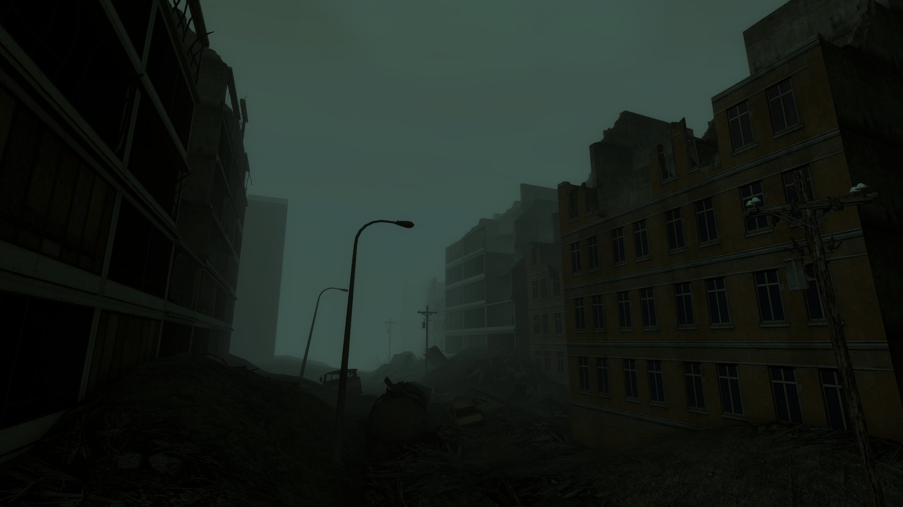

<section style="background-color: #1c1c1c; color: #ddd; font-family: 'Segoe UI', sans-serif; padding: 40px;">
  <div style="max-width: 1000px; margin: auto;">
    <h3 style="font-size: 2rem; color: #FF4F00;">🌳 RP_Apocalypse</h3>
    <p style="line-height: 1.6; margin-top: 10px;">
      <strong>RP_Apocalypse</strong> se passa em um ambiente florestal pós-apocalíptico, onde a civilização desapareceu e a natureza retomou o controle. Ruínas e caminhos esquecidos compõem o cenário ideal para exploração e tensão constante.
    </p>
    <ul style="line-height: 1.8; margin-top: 20px;">
      <li>🌲 Florestas densas e terreno irregular</li>
      <li>🏚️ Edifícios abandonados e estruturas em ruínas</li>
      <li>🧭 Ideal para patrulhas de sobrevivência e emboscadas</li>
      <li>🌫️ Clima pesado e sensação de abandono total</li>
    </ul>
    <div style="margin: 30px 0; text-align: center;">
      
      <p style="margin-top: 10px; font-style: italic;">Cenário desabitado e sombrio do mapa RP_Apocalypse.</p>
    </div>
  </div>
</section>
